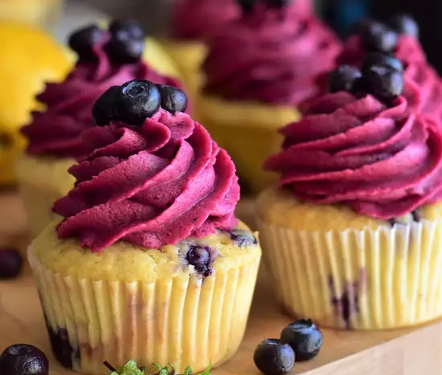

Lemon-Blueberry Cupcakes

Zesty and bright, these cupcakes are sure to wow! A vibrant frosting (flavored with a quick homemade jam) sits atop a lemony, moist cupcake studded with colorful berries. Using frozen blueberries makes these cupcakes accessible any time of year, too!
Ingredients
Blueberry Jam:
- 1½ cups frozen blueberries
- 2 tablespoons white sugar
- 1 teaspoon lemon juice
Directions
- Step 1: Preheat oven to 375 degrees F (190 degrees C). Grease and flour one 9-inch tube pan.
- Step 2: In a large bowl, cream the butter and sugar. Beat in the egg yolks and the lemon zest.
- Step 3: In a large bowl, cream the butter and sugar. Beat in the egg yolks and the lemon zest.
- Step 4: Stir together the flour and baking powder and then blend the flour mixture into the creamed mixture. Gently fold in the egg whites. Spread the batter evenly into the prepared pan. There will only be a little over an inch of batter. Arrange the plums, skin side down, attractively over the batter.
- Step 5: Bake in preheated oven until a tester inserted in the center comes out clean, about 40 minutes. Transfer to a cooling rack and allow to cool before serving.